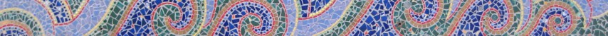

sfgazetteer.com

More Mosaic Sites in San Francisco
By Dave Schweisguth
(email: dave at schweisguth dot org)
Lillian Sizemore's Guide
to Mosaic Sites: San Francisco lists and explains dozens of
publicly accessible murals, buildings and other mosaic sites
throughout the City. It's a terrific publication; you should go buy
a copy right now. But even by the Guide's high standards, there are
many more mosaics around San Francisco that are worth a visit. Not
only have San Francisco's mosaic artists kept up their output since
2004, when the first edition of the Guide was printed, there are
even a few significant works that were missed at the time. We hope
this little bare-bones catalog will inspire Lillian to revise and
expand her Guide sometime soon.
Huxley Beagle and I found
many of the mosaics listed here while walking from our home in the
southwest Mission District to two different workplaces South of
Market several times a week in 2006. We joined Jeanne Halpern on her
mosaic hikes for the Sierra Club. A few mosaic works were even
installed practically within view of our home. We continued the hunt
all over San Francisco. Huxley was succeeded by Wallace Beagle and
Halley Beagle. Here's what we found.
I update this article whenever we find something new. (Just search
the page to find the new entries. I did say it was a bare-bones
catalog.)
- Oct. 2022: 120 Lundys Lane, 219 Cumberland
- Feb. 2022: The Bay Area map at Leavenworth & Francisco
North of Market
There is a broken-tile mosaic around the ticket windows in the lobby
of the Golden Gate Theater, on Golden Gate at Taylor.
The Phoenix Hotel, in the Tenderloin at Eddy and Larkin, has at
least two mosaics: a sun-like design on their facade, and decorative
motifs
at
the bottom of their swimming pool.
A
Great Seal of the State of California, designed by Major
Robert Seldon Garnett, executed by Giovanni Braida in 1898 and
restored by Page and Turnbull in 2003, is the centerpiece of the
restored marble mosaic floor on the second level of the Ferry
Building. Small mosaics of California food products by Mauricio
Arias (also 2003) decorate the walls on the first level.
212 Sutter (just west of Kearny) has an
interesting mosaic-tiled entryway.
In the apse of Notre Dame des Victoires, on Bush between Stockton
and Grant, is a
mosaic of the Virgin Mary.
The
floor of the Bush Street entrance to the WorldMark by Wyndham,
formerly the Hotel Juliana, at 590 Bush (at Stockton) is covered
with mosaic.
The patio behind the International Building (601 California, at
Kearny) has a
tantalizing group of what appear to be mosaic fountains and tables.
Although the building is unfortunately not open to the public, the
patio can be seen from orbit, from which point of view it
appears that some of the mosaic pieces have been removed.
Precita Eyes, better known for their painted murals, contributed a mosaic mural to
the 2010 restoration of the Chinatown YMCA, on Sacramento between
Grant and Stockton. The mural is in the swimming pool area.
The front entrance to Gordon J. Lau Elementary, on Clay between
Powell and Stockton, is flanked by mosaic
trees, and "A
Bug's Eye View", by
Kim Payne, Jane Schafgans and students, is at a side entrance.
Not only are the upper floors of the Clayton
Hotel (657 Clay, between Kearny and Montgomery) decorated with
an interesting mosaic border, a former tenant on the ground floor
installed several kinds of decorative tile.
A
mosaic of one of the magnificent espresso makers that are Thomas
E. Cara's stock in trade adorns that business's entryway at
517 Pacific (near Montgomery).
The facade of Nuestra Senora de Guadalupe (Our Lady of Guadalupe),
at 906 Broadway between Mason and Taylor, is decorated with a
mosaic of the church's patron saint.
A
framed, glass-enclosed mosaic of a flowering plant is on the
wall of 54-56 Glover (an alley between Broadway, Jones, Vallejo and
Leavenworth). Unfortunately the frame traps moisture and the piece
is disappearing under algae.
The column in front of the entrance to the Pasta Pomodoro at
655 Union Street, between Columbus and Powell across from Washington
Square, is mosaiced with a
striking sun-and-moon design by Bryan Mose.
A
water
fountain
on
the
south
side
of
Washington
Square (on the north side of Union between Columbus and
Stockton) is encrusted with mosaic decoration.
A mosaic of
three doves graces the entry to 350 Union Street (between
Kearny and Montgomery).
The
doorway of 1536-1538 Grant is mosaiced with swimming carp.
A
sewer
hatch on the Greenwich Steps is covered with a floral design
in broken tile.
Joe DiMaggio Playground sports a
large mosaic-skinned fish, designed by Miracle Playsystems.
The facade
of 733 Chestnut Street (between Jones and Taylor) was once
tiled with the stylized Chinese character shou (longevity) and, over
the doorway, a fu (good fortune). As of December 13th, 2008, this
building was being redone and the mosaic was gone.
On the second floor facade of Villa de Martini, 298 Chestnut Street
(at Grant) is a mosaic
of a human figure, possibly by Elio Benvenuto.
At the south end of the wall between Leavenworth and Francisco
Streets is a
nice little mosaic map of the Bay Area.
In the entryway of the Bay Stockton West apartments at 2133 Stockton
(at Bay) is a
column
holding
mailboxes
and
covered
on
all
four
sides with bright abstract mosaic decoration. The legend
"Built by Angelo Sangiacomo" refers to the developer of the
property; the artist is unknown.
Just inside the front door of the Union Square Hotel, on the east
side of Powell Street just above Ellis, are a pair of
floor-to-ceiling mosaics by none other than Helen Bruton. One
depicts a
man with a basket of grapes, the other a
woman with a basket of flowers. The latter is signed and dated
1937.
The Owl Tree, at Post and Taylor, has lost the owl bric-a-brac with
which it was once stuffed but gained a striking
mosaic
facade.
Mosaic
waves roll along the lower part of the facade of the former
Commodore Hotel at 867 Sutter Street.
There is a large broken-tile mosaic in the lobby of the Golden Gate
Theater, at Golden Gate, Taylor and Market.
Not yet investigated: Laurel
True's mosaics in the Tenderloin, for St. Boniface Church on
Golden Gate Avenue and in the dining room of Marlton Manor, 240
Jones at Eddy.
A mosaic
of
a double-headed eagle and the motto "Spes mea in Deo est"
guard the door to the former Scottish Rite Masonic temple at 1290
Sutter Street, at Van Ness.
1-3 Leroy Street is decorated with a mosaic
of a shell and fish.
High on the outside wall of the fish receiving station of Scoma's
Restaurant on Pier 47 is a mosaic of
San Francisco landmarks by John O'Shanna.
The
Ghirardelli
eagle logo is set into the floor inside the entrance of the
Ghirardelli Chocolaterie and Cafe, at North Point and Larkin.
The Aquatic Park Bathhouse (until recently more often known as the
Maritime Museum) has several interesting mosaics (as well as murals
and other integrated art): the
twin fountains at the front entrance, a
tile mosaic the length of the veranda, and another
fountain on the rear lawn.
Hayes Valley, Lower Haight, Alamo Square, Western Addition,
Pacific Heights, Cow Hollow, Marina
Laurel
True's "Lily Pod" sculpture is in the recently renovated Hayes
Valley Playground at Hayes and Buchanan Streets. It either includes
or is accompanied by mosaic borders around play areas.
The
Scott Street Labyrinth, at the west end of Duboce Park,
includes mosaic and tile elements.
On the retaining wall along Fell Street, on the south side of Ida B.
Wells High School, are the first three entries in the Fell Street
Mural Project: at the corner at Pierce, at the east end, towards
Steiner and to the left of #2.
Not yet investigated: Two mosaic police badges are in the lobby of
the Northern Police Station at 1125 Fillmore, near Golden Gate.
Three mosaic sculptures by Kid Serve stand outside the Creative Arts
Charter School, at 1601 Turk (at Pierce). Behind the school, a
fragmentary tile mosaic of a butterfly (seen in 2008) visible
from Elm Street off of Pierce might be the start of another piece.
Kid Serve's "A Sign of Hope" and "Urban Portrait Project" are at the
Gateway Charter High School on Geary between Scott & Steiner.
The
entryway
of 2910 California, between Broderick and Baker, is decorated
with a square-tile mosaic landscape.
Not yet investigated: Beniamino
Bufano's
"Mother of the World" is in the lobby or the Prenatal Waiting
Area of the California Pacific Medical Center at 3700 California (at
Maple). There may be another piece
in that hospital, or the two photos might be of the same piece.
The stairway
to 2813 Buchanan Street, between Green and Vallejo, is by Colette
Crutcher.
Anthony Stellon's former studio, 1830 Union, on the north side
between Octavia and Laguna, has a mosaic-tile facade which is
unfortunately mostly painted over. However, a
mosaic survives in the doorway.
The
side door of the old Vedanta Society temple, on Filbert at
Webster, is outlined in mosaic including a Sanskrit inscription.
Low walls in the Alta Plaza playground are decorated with mosaic.
Corona Heights, Buena Vista, Cole Valley, Haight-Ashbury, North
of the Panhandle, Anza Vista, Jordan Park
A
framed, multi-panel mosaic work hangs on the Peixotto
Playground clubhouse at 15th & Beaver Streets.
1349 Masonic, on the west side between Frederick and Waller, is
reached by mosaic-faced
steps.
Not visited yet: three Kid Serve murals at the Grattan School, at
165 Grattan in Cole Valley, one at the entrance and two in the
garden.
Braindrops, at 1324 Haight between Central and Masonic, has a
mosaic logo in their doorway.
Not visited yet: Kid Serve's "Lemon Tree", on the Whole Foods
supermarket at Haight & Stanyan.
The "Cultural Collaboration Mural", a striking mosaic and tile mural
by Sharon Virtue, covers the wall to the left
and right
of the door to the Boys and Girls Club at 1950-1970 Page (between
Stanyan & Shrader).
There's an
even more impressive mosaic logo in the doorway of the former
location of Braindrops Tattoo & Body Piercing, at 1871 Hayes
(between Ashbury & Masonic).
The Starbucks at Masonic and Fulton features an enormous mosaic
flower mural by Kid Serve.
A mosaic lunette crowns the front door of St. John the Baptist
Serbian Orthodox Church at Turk & Baker Streets.
A
mosaic of the Madonna and Child is above an entrance to St.
Gregory's Armenian Church, at 51 Commonwealth (between Euclid and
California).
Richmond District, Presidio
Sarah Dorrance and Luis Hernandez' 2007 mosaic bench, "In
Memory of Julia", is in the Rossi Playground at Arguello and
Anza.
A large
mosaic in the courtyard of the Kaiser French campus, between
5th, Geary, 6th and Anza, commemorates the French Hospital and
Dorothy Hager Rogers.
422 9th Avenue, just south of Geary, has a
large mosaic of a stalk of wheat in its lobby. It is signed
with the Chinese character for "city".
The fence around Argonne Elementary, on Cabrillo between 17th and
18th Avenues, is decorated with many small mosaics of sea life
organized by Jane Schafgans. Here are views of the west
and east
ends of the fence.
To the left
and right
of the entrance to the Alamo School (on 23rd Avenue between
California and Clement) are mosaic scenes of butterflies.
At the center of the Rochambeau Playground, on 24th Avenue between
California and Lake, is Johanna
Poethig's "Play Ball!".
Monumental
mosaic images of saints adorn the facade of the Russian
Orthodox Holy Virgin Cathedral, on Geary Boulevard between 26th and
27th Avenues.
California Street ends, just to the west of 32nd Avenue, at the
Lincoln Park Steps, with a
floral mosaic by Aileen Barr.
Two-sided mosaic panels by Colette Crutcher at 34th Avenue (east
side, west
side) and 39th Avenue (east
side, west
side) mark the ends of the outer Balboa Street commercial
district.
The
sign for the Presidio Native Plant Nursery, in a maze of
streets all named Appleton southeast of Fort Winfield Scott, may be
the only mosaic in the Presidio.
South of Market
In the entryway of the
Apostleship of the Sea building at Harrison and Fremont was a
hard-used mosaic
of Mary and Jesus by an unknown artist. Appropriate to the
setting, Mary held a sailing ship and stood on an island amidst
waves. As predicted in an
article in the S.F. Chronicle, the building was demolished in
late 2007.
A
mosaic ILWU logo hangs over the south door of Local 34 at 4
Berry Street (on the east side of AT&T Park).
Atlas holds
up the globe in the lobby of the Atlas building (604 Mission
Street, at 2nd) in a work by an owner of the building.
"Painted
Ladies We Love", one of the 2009 Hearts in SF, by Alan Roth
and Nick Berg, was in the upper level of Yerba Buena Gardens for the
summer.
Johanna
Poethig's
"Life Mosaics", which despite its title relies as much on
decorated tiles as on mosaic, is a four-paneled work on TODCO's
Woolf House, at the south corner of 4th and Howard.
Johanna Poethig and Ursula McGuire's "Sun Mosaic" can be seen
through the front door of the Creatice Polite Apartments, 321
Clementina between 4th and 5th Streets.
"Arrow",
an Artspan work led by Johanna Poethig, wraps around the entrance to
SoMa Artists' Studios at 689 Bryant, between 4th and 5th Streets.
"I
Dream as I Walk Through the Moon", another Artspan/Poethig
work on Mission Street between 5th and 6th, is entirely decorated
tile, not mosaic, but fits in nicely here with the artist's other
works anyway.
Martha
Heavenston's
"A World View" is on the back of the Eugene Friend Rec Center,
on 6th Street at Folsom.
The James R. Browning Courthouse at 7th & Mission Streets, home
of the U.S. 9th Circuit Court of Appeals, holds a wealth of
little-known mosaic works. It was built in 1905 and beautifully
restored after the 1989 earthquake. Mosaics such as one
of an American eagle decorate the
arched ceiling of the first-floor hallway, and mosaic touches
adorn floors and walls throughout the building. Even the
wall around the courtyard has a decorative pattern in mosaic
tile. Courtroom One has a series of three mosaics, allegories of "Science,
Literature and the Arts", "Columbia"
(flanked by representations of the Phillipines and Hawaii and an
infant Puerto Rico) and "California"
with her mainstays Agriculture and Mining. Courtroom Three has
another series, showing "The
Freedom of the Law", "The
Majesty of the Law" and "The
Wisdom of the Law" (including a depiction of the Ten
Commandments over which the Court itself was sued in 2005). The
free public tour, offered on two Tuesdays each month, is a
must for mosaic hunters.
"Respect and Responsibility", another Kid Serve mural, is inside the
gate of the Bessie Carmichael School at 7th & Harrison.
San Francisco's largest mosaic may be the
tile
decoration
on
the
Channel
Pump
Station
at
the head of Mission Creek.
The Kid Serve mural on the Children's Village Child Development
Center, on 10th between Howard and Folsom, has no title but an
especially charming caption.
Potrero Hill, Dogpatch, Mission Bay
Two seating
walls
at Tunnel Top Park, at the corner of 26th & Pennsylvania, are
decorated with a sponsored-tile mosaic by Aileen Barr.
Starr King Elementary, high on Potrero Hill at the south end of
Carolina Street, is a mosaic hunter's jackpot. Not only are there
two Kid Serve works, a panel depicting California civil rights
heroes near the entrance on Carolina St. and a monumental mural of
neighborhood oral histories around the block along Wisconsin St.,
but a
woodland scene by Helen Bruton, dated 1955, also lies in wait
by the Carolina St. entrance. There is also an unsigned pebble
mosaic on a platform in front of the Carolina Street entrance. Well
worth the trek!
Hidden behind the tennis courts at Potrero Hill Recreation Center,
near 22nd & Arkansas, enjoying a superb view of downtown and the
East Bay, is a
bench
by Laurel True and Sharon Virtue. The mandalas and donor wall
in the children's playground are also by Sharon Virtue.
Sharon Virtue's mosaic bench in memory of Enola Maxwell, community
activist and mother of former District 10 supervisor Sophie Maxwell,
is back at the Potrero Hill Neighborhood House, of which Enola
Maxwell was formerly a director, on Southern Heights Boulevard at De
Haro. From 2011 to about 2014 it was next to 1559-1561 Jerrold
Avenue, just east of Third Street, across the street from former
supervisor Maxwell's home. From 2003 to 2011 it stood in the garden
across De Haro from the Potrero Hill Neighborhood House.
Stamped-tile and broken-tile leaves form a
mosaic of mosaics at the Friends of Potrero Hill Preschool at
1060 Tennessee Street, between 22nd & 24th.
Not visited yet: Kid Serve's "You've Got A Right To The Tree Of
Life", on the Daniel Webster School at 20th & Missouri.
A pebble mosaic decorates "The
Benches", a micro-park at San Bruno and 18th Street.
In early 2007 the small mosaic on the Mariposa Street side of St.
Gregory's Episcopal Church (on De Haro), which depicted the church,
had been removed.
"California Oral Histories" is the labor-themed Kid Serve mural on
Enola Maxwell Middle School, on De Haro between 18th & 19th.
A low wall in Jackson Playground's children's playground is covered
with an unusual combination of mosaics, handmade tiles and
decorative tile in Joshua Sarantitis' "Big
Snail
Fish".
A large
mosaic by Paul Kos of small square titles which spell out its
name, "every thing matters", is in the lobby of UCSF Mission Bay's
Diller Cancer Research Building, off Nelson Rising Lane between 3rd
& 4th Streets.
On 4th Street between 16th & Mariposa, next to the UCSF Mission
Bay Hospital, is an amphitheater adorned with Clare Rojas' mosaic "Hummingbirds".
Precita Eye's "The
Bay", on the northeast side of the Chase Center, at Terry A.
Francois Blvd. & Warriors' Way., shows basketball players and a
two-bridge view.
Judy West and Vanessa Workman's mural of marine
life adorns the public boat launch at Pier 52.
Bayview District
A
woodland scene, possibly by Kid Serve, adorns the side of Big
City Montessori School, on Industrial Street at Loomis.
At one side of Hilltop Park is a
long crescent bench surfaced with mosaic by Rachel Rodi.
The stairs on Innes at Arelious Walker Drive now host Aileen
Barr and Colette Crutcher's tile work "Flights of Fancy",
inspired by decorative patterns from around the world.
Mission District
Casa Adelante, a city housing project on Shotwell between Cesar
Chavez and 26th, is decorated by a
broken-tile mosaic titled "Cycle of Life".
Just down the block in our own local park, Juri Commons (between San
Jose, Guerrero, 25th and 26th Streets), is artist Jennifer
Alexander's temporary mosaic "Sol Flor". Dave and
many other Juri Commoners helped execute and install the work. We're
hoping to get its stay extended, but no guarantees, so see it while
you can!
The renovated entrance hall of the Monteagle Medical Center at St.
Luke's Hospital, on Valencia Street near Duncan, features Julia DiBiasi's mosaic
mural "Diversity
and Chaos".
At the corner of 25th & Valencia are "Map
of the World" and "Where
Space Meets Earth", done by Synergy School students under the
supervision of Sarah
Dorrance. (Photos of constructing and installing the works are
here
and here.)
Through
the fence behind them can be seen the mosaic
columns supervised by Colette Crutcher, which border the
courtyard, and, at the back of the courtyard, another mosaic mural.
"Beautiful View", one of the many Kid Serve murals supervised by
Josef Norris, is on Buena Vista Elementary School at 25th &
Utah.
A year after "Tribute to Dolores Huerta" (Guide p. 35), a second Kid
Serve mural, "Native American Creation Stories" joined the fun on
Leonard R. Flynn Elementary, on Cesar Chavez Blvd. between Folsom
& Harrison.
The mosaic decoration still remains around the entrance of the former Gallery
Luscombe at 3040 24th St. (near Treat).
The centerpiece of the 24th and York Mini Park, reopened in late
2006, is a mosaic
sculpture of the feathered serpent god Quetzalcoatl, by Mark
Roller, Colette Crutcher and Aileen Barr. There is also a
mosaic mural of a jungle.
The recently established SF Tikes Academy, on South Van Ness between
23rd and 24th, is adorned with a
nicely done broken-tile-and-mirror mosaic of insects and flowers
by Jne Schafgans.
Rigo's "Mission 23", at Mission and 23rd, is a sidewalk mosaic of
green and white tiles enhanced by painted tiles.
On the side of a small structure in a roof garden on the third floor
of the S.F. General Hospital's main building, opposite the eastern
bank of elevators, are no less than three major mosaic murals by
Mission District muralists Manuel
Villamor, Michael
Rios and Carlos
Loarca. The murals are connected by bands
probably done by one or more of the mural artists. A
fourth work, by Jerry Concha, is on the roof of the small
structure and visible only from above.
At the northeast corner of Potrero and 22nd, next to S.F. General's
building 80, is Beniamino Bufano's "Madonna". (Until recently it was
tucked away next to the Volunteer Center just off 22nd St.) The
anatomical theme fits its setting perfectly.
Hilda
Shum's "Fish Tale" breaches a mosaic sea next to the parking
lot of the Dept. of Public Health Mental Rehabilitation Facility, at
887 Potrero Street next to S.F. General.
Mosaics cover the interior columns at Boogaloo's, on Valencia at
22nd Street.
A broken-tile
bench by Sarah Dorrance is in front of 2956 22nd Street near
Treat.
"Healthy Happy Heart" is a Kid Serve mural by second graders at
George Moscone Elementary, on the school on Harrison St. between
21st and 22nd.
Nearby at the Boys and Girls Club, at 901 Alabama St. at 21st, a
long mural depicts the club's activities.
The entrance to Bethany Senior Center, on Capp Street at 21st
Street, boasts "Growth",
an unsigned mosaic mural by none other than the well-known San
Francisco artist Ruth Asawa.
Judy
Hiramoto's "Animal Hopscotch" is a mosaic in the courtyard
playground of the Mission Recreation Center, on Harrison Street
between 20th and 21st.
The entrance to Dog-Eared Books, on Valencia Street at 20th, is
decorated with mosaic. Be sure to look both up and down. And the doorway
of their old location, on the east side of Valencia between
22nd and 23rd, now Scarlet Sage, still bears their name.
On the east side of Valencia near 19th Street is Vertical Clearance,
a hair salon. On its window sill is a charming little bit of mosaic
by Emily Kiesel which makes remarkably effective use of a very few
chips of broken tile.
Laurel True and Lillian Sizemore's "Bounte
Bouday War" (Mysterious Door), a curvilinear stage backdrop,
is inside the Bollywood Cafe, on 19th Street just east of Mission.
There is an
untitled broken-tile mosaic under the ramp at Fallen Bridge
Park, on Utah at 18th.
The owner of the newest branch of Frjtz, on Valencia between 16th
and 17th, has hung some of his mosaic skateboards and other artworks
in his new establishment, and installed a mosaic in the doorway.
Small round mosaics of saints and historical figures encircle the
nave of the Mission Dolores basilica, on Dolores at 16th, and a
couple of niches are lined with mosaic patterns.
El Pollo Supremo, 3036 16th Street, on the north side near Mission,
has been replaced by Taqueria Los Coyotes, but the mosaic facade
(Guide p. 11) remains.
"Our Children", another Kid Serve mural, overlooks Kid Power Park,
on Hoff St. near 16th.
Kid Serve's most impressive work, the 6-story-tall "Beyond the
Trees", is in the courtyard of 170 Otis, between McCoppin &
Duboce.
"The Flower Inside Us Grows" (page 16 of the Guide) was destroyed
during renovation of 150 Otis, between McCoppin & Duboce.
A mosaic work which is extra special to Huxley and I is Anthony
Stellon's "Brotherhood of Man", which we found under potted plants in
a Rec & Parks work area in the northeast corner of
Franklin Square Park while walking to work in early April 2006.
"Brotherhood of Man" was originally installed at the Martin Luther
King Jr. pool at Third and Carroll Streets in the Bayview. It was
taken down when renovation of the pool began in 1996 and moved to
Franklin Square for safe keeping. Thanks to a nudge from Huxley and
I and actual work by Lillian Sizemore and the Friends of Franklin
Square it was reinstalled in Franklin Square's new playground and unveiled
on November 23, 2013.
Bernal Heights, Holly Park
Peter Almeida's 1988 "Colloidal Pool" is in the Coleridge Street
Mini-Park at the bottom of the Esmeralda steps.
The street number of 120 Lundys Lane is a snazzy glass mosaic of a
redwood forest.
This
mysterious mosaic is below the edge of the topmost large
landing of the Esmeralda steps (above Elsie), across from the live
oak and plaque which honor Margaret Randolph for her contributions
to the community.
Colette Crutcher's Peringer/Rodriguez
entry graces 183 Ellsworth Street, near Eugenia.
A
mosaic mural of marine life is in progress at the corner of
Jarboe and Nevada.
The Junipero Serra Child Learning Annex on Appleton Street west of
Holly Hill boasts an impressive constellation of mosaic pieces on
several buildings and along the wall facing the sidewalk. At least
one of them, "Bernal's Farm", was supervised by Kid Serve.
East of "Wise and Furry" (page 35 of the Guide), on the opposite
side of Highland Street, a mosaic
mural is in progress on a low concrete wall.
The south end of Moultrie Street, south of Crescent, is unexpectedly
brightened by a
low mosaic-covered wall. A small
mosaic of a tree is embedded in the sidewalk nearby at #814.
Portola District, Visitacion Valley, Little Hollywood, Excelsior
District, Mission Terrace, Outer Mission
At the south end of bridge the over Interstate 280, spaces in the
masonry on the west
and east
sides of the street are filled in by "The Excelsior: A Journey from
Dawn to Dusk", by the Excelsior Boys and Girls Club and the SFAI
City Studio.
On the facade of Hillcrest Elementary School at 810 Silver Avenue
are a
c. 2005 mosaic of a tree full of butterflies (not, apparently,
a Kid Serve work) and a 2010 Kid Serve piece. Another
mosaic decorates the door from the schoolyard. Drescher's San Francisco Bay Area Murals
lists a seven-paneled work (#430) in the school's library; if still
present, it isn't visible from the outside.
A
row of bollards at an entrance to McLaren Park on Burrows St.
at Gambier is in the process of being covered with mosaic.
A
circular planter at McNab Lake in McLaren Park was decorated
with a mosaic of sea life "sponsored by First Five". A nearby
retaining wall was mosaiced in 2015 by community participants and
artist Rachel Rodi.
The southernmost entrance to the Visitacion Valley Greenway features
three
tiled columns topped with mosaiced shapes. There are more
similar works along the greenway, and broken-tile trim around each
gate and along Leland Avenue.
The garden behind Visitacion Valley Elementary has an
amphitheatre filled with mosaics by local artists, including a
spectacular lizard bench. Though not accessible to the public,
they can be seen from the path between the school and the adjacent
public playground.
Colette Crutcher's "Mother
and Child Arch" is one of the showpieces of the amazing
sculpture garden inside the San Francisco dump, on Tunnel Avenue in
Little Hollywood. The monthly tour of the dump, which includes a
presentation on recycling in SF, a visit with the artists in
residence and tours of the waste transfer facility and the sculpture
garden, is about the coolest thing you've probably never done. No
dogs allowed, though.
Outside the dump office at 501 Tunnel Avenue is a
mosaic quilt of bottlecaps and other found objects.
Monroe Elementary now boasts not just the single mosaic listed in
the Guide (p. 33), but an astonishing collection of works in several
different styles (for example these,
these,
these,
this
and this)
all around its exterior, as well as a
map of the world visible in a second-floor window.
A
low wall in the children's playground at Crocker-Amazon
Playground is covered with mosaic.
A
wall behind 701 Excelsior Avenue, along Vienna Street,
displays a series of broken-tile mosaics.
Over the front doors of Church of the Epiphany, on Vienna at Amazon,
are mosaic
scenes
of
the
annunciation,
death
and
resurrection
of
Christ.
As well as "Suncatchers" (Guide p. 33), Denman Middle
School (on Oneida between Otsego and Delano) is home to another Kid
Serve mural, "A Living Library", as well as a painted-tile walkway.
The stairs in Kenny Alley (between Mission, London, France &
Italy) are decorated with a
mosaic of flowing water.
A file of tall, narrow mosaic panels separates the gas station
at the northwest corner of Mission & Geneva from the sidewalk.
A
Byzantine Mosaic Company facade survives on the Bank of
America branch at 5150 Mission Street, just south of Geneva Avenue.
There are several more Kid Serve murals in the Bayview, Visitacion
Valley and other places in southern San Francisco.
Dolores Heights, Castro District, Upper Market
A mosaic of stone tesserae, depicting spirals within spirals, is
in the doorway of 219 Cumberland, between Church and Sanchez.
A
rainbow of glass tiles greets visitors to the apartment
building at 4030 19th Street between Noe and Hartford.
There is a
colorful glass tile mosaic next to the front door of 50
Eagle Street.
Noe Valley
Not investigated yet: A photograph
in the San Francisco public library's historical photograph
collection shows a mosaic mural that is or was at the Edison
Elementary School.
Cradle of the Sun, a stained glass studio on 24th at Vicksburg, has
a beautiful new
glass mosaic in its entryway.
James Lick Middle School, on Noe St. between 25th & Clipper, has
a growing collection of mosaic works:
- The Santana Peace Garden, in front of the school, includes
small, solidly done mosaic pieces by Mr. Stuckey's 8th-grade
arts classes, dedicated to Carlos
Santana and to Christian
Garcia and Gregory Jones and inscriptions in the sidewalk.
According
to the Noe Valley Voice, each year's graduating class will
create a new artwork for the garden.
- At the rear of the school building, "On the Brink of
Extinction", another Kid Serve mural, features a sea turtle.
- One of the pillars of the fence along Castro is covered by an
unsigned work depicting symbols of education.
- An impressive
student work from the 1970s is in the cafeteria.
Broken-tile mosaics of a global streetscape decorate the left
and right
facade of the former Global Exchange location on 24th between Noe
and Castro.
In addition to the 2000 work by Paul Lanier listed in the Guide (p.
44), there is a second mosaic mural at Alvarado Elementary School
(at Alvarado and Douglass Streets). It was supervised by Nancy
Thompson in 1972, and, according
to
the Noe Valley Voice, Paul Lanier worked on it as a student.
The mural is in the southwest corner of the schoolyard on the south
wall and is hard to see from outside. Try looking down the driveway
along the south side of the school from Douglass Street.
A pebble
mosaic of a whale's tail is the first of three mysterious
symbols in the driveway to 70 Grandview. (The driveway is around the
corner on Romain.)
In front of 1913 Castro, hidden in the Duncan-Castro Natural Area,
is a
bright mosaic planter box.
The wall in front of 21 Fountain St. was covered with an
impressive combination of tiles and broken-tile mosaic.
Unfortunately the house and wall were demolished in 2009 or 2010.
Glen Park
136 Mateo Street has a mosaic
mermaid street number.
A mosaic
mural of the forest by Kid Serve frames the doorway to Glen
Park Montessori, 647-649 Chenery, near Carrie.
Next door, the Bird and Beckett bookstore at 653 Chenery has a mosaic
sign by Colette Crutcher and Mark Roller.
Next to the entrance to St. John's Elementary School at 925 Chenery
is a semi-abstract
mosaic inscribed with a quotation from St. John the
Evangelist. Above the entrance around the corner at Burnside and
Paradise is another
inscribed with a quotation from John F. Kennedy.
The wall outside Glen Park School, on Lippard at Bosworth, has a
broken-tile mosaic of local flora and fauna, sponsored by the
Create Peace Project.
City College (Sunnyside), Ingleside
Bufano's
"St. Francis of the Guns", cast from melted firearms, stands
in front of City College's Science Building.
"Organic and Inorganic Science", (also called "Education"), two
monumental marble mosaics by Herman Volz, fill the north
and south
porticos of City College's Science Building.
Red and blue mosaic patches decorate Jacques Overhoff's "Sculpture
Deck" and "Bicentennial
Wings", next to City College's Batmale Hall.
Two utility boxes in the garden at the end of Tara at Geneva are
decorated with mosaic fish,
birds
and flowers.
Laurel True's great orange "Sun
Spheres", finally installed in 2008 (see Guide p. 33) surround
the intersection of Ocean and Granada Avenues.
Twin Peaks, West of Twin Peaks
The
Dragon's Tale steps are on the south side of Miraloma
Elementary, on Bella Vista Way between Dorcas Way and Avoca Alley.
They were supervised by Aileen Barr and Colette Crutcher.
Rooftop School has no less than eight mosaic works:
- five murals by Kid Serve
- "Peaceable Kingdom", off Corbett on Dixie Alley
- "The Caterpillar", at the bottom of the stairway at
Corbett and Romain
- "In the Time of Silver Rain", at the entrance to the
Mayeda campus at Corbett and Iron Alley
- "Rooftop Memory Wall", at the back of the playground at
the Mayeda campus
- "Rooftop Mosaic Mural", in the playground
- "In
Our
Peaceable Kingdom", designed by Andi Wong and Ms. Woo's
4th-grade class with assistance from Josef Norris, which can be
seen through the fence at the top of the stairway above "The
Caterpillar" (thanks to tipster Judy and to Andi Wong for the
photo)
- "Endangered
Wall", also at the Mayeda campus, by Cynthia Sugawara's
8th-grade art class and Catherine Palmer
- a
fountain at the Mayeda campus, also by an 8th-grade art
class (thanks to Ms. Sugawara for info and photos of this and
the previous work)
Not visited yet: The new Laguna Honda Hospital lobby has a series
of mosaic murals by Owen Smith showing the building of the Golden
Gate Bridge.
The Hospice Garden between the south wings of Laguna Honda Hospital
is home to many artworks done by the residents, including a
mosaic featuring a butterfly, set into the ground. [Not
visited since Laguna Honda was rebuilt.]
The
sign for Clarendon Elementary, on Clarendon Avenue at
Panorama, is done in mosaic.
Sunset District, Parkside, Lakeshore
Hidden inside the Garden for the Environment at 7th & Lawton is
a
broken-tile mosaic of a tree's roots.
A mosaic
jester by Delaine Hackey advertises Pasquale's Pizzeria on
Irving at 8th.
A
mosaic of undersea life is in progress at 2253 9th Avenue
(between 12th & Mesa Avenues) in Forest Hill.
The home of Betty Mosias (not generally open to the public) at 2375
12th Avenue (at Magellan) features two bathrooms with mosaic and art
tile work as well as a mosaic birdbath and other pieces by Ms.
Mosais, and rooms full of fascinating objects collected over a
lifetime.
A
mosaic in the courtyard of Alice Fong Yu Elementary, on
Funston at Lurline, features the Golden Gate Bridge and the Great
Wall of China.
Aileen Barr and Colette Crutcher turned the steps on 16th between
Kirkham & Lawton into the magnificent Hidden
Garden Steps.
Students from Jefferson Elementary made the impossible-to-miss Kid
Serve mural on 19th Avenue at Irving and another work in the
courtyard of the school, between Irving, Judah, 18th & 19th.
Rachel
Rodi's "Flight", on the Larsen Park restroom building, off of
Vicente near 19th Avenue, remembers the actual airplane that once
stood in the park.
In the courtyard of Congregation Ner Tamid, visible from Ortega
between 21st & 22nd, is a
wall mosaic, "Tree of Life Amid the Garden".
A mosaic mural made by Margaret Baker Sarris from beach pebbles
gathered by congregants hangs over the altar of Grace
Evangelical Lutheran Church at Ulloa & 33rd.
"Abundance",
a sculpture consisting of two giant mosaic fish, by Wowhaus,
guards the entrance to the Ortega Branch Library, on Ortega between
39th & 40th.
Sunset Elementary, at 41st & Ortega, has a Kid Serve work, "Protectors
of the Amazing Redwood Forests".
The
Sunset Neighborhood Forest is actually a broken-tile mural by
Rachel Rodi, on the Ulloa School on Vicente between 41st & 42nd.
Weathered
mosaic doorways, "Ocean Door" by Laurel True and a second,
temporarily unidentified work from 2003, flank stairway 16 at Ocean
Beach.
Giant,
mosaic-encrusted concrete sails by Colette Crutcher are the
first of two planned gateways to the west-end-of Taraval
neighborhood, at Great Highway and Taraval.
Two mosaic murals by the Bruton sisters, of children
and of St.
Francis with animals, flank the entrance to the San Francisco
Zoo's Mother's Building.
The eyes of the animals in Mary
Fuller's "Earth, Air, Sea", which guards the entrance to Sloat
Boulevard from the Great Highway, are mosaic sunbursts.
Bufano's "Peace"
stands on Brotherhood Way between Lake Merced and Junipero Serra
Boulevards.
A
mosaic emblem crowns the sign at the entrance to Holy Trinity
Greek Orthodox Church at 999 Brotherhood Way. (There are mosaics
inside as well, not yet investigated.)
Several more Kid Serve murals and many mosaic playground decorations
are located throughout western San Francisco.
Treasure Island
The Delancey Street Foundation's Life Learning Academy, at 8th &
H Streets on Treasure Island, features an
inspirational mural with the words "Stop. Think. Decide."
San Francisco International Airport
Huxley always greets guests at the airport, though he hasn't been
past security since moving to the Bay Area in 2005.
Rigo
'99's
monumental "Thinking of Balmy Alley" towers over gate G98 in
the International Terminal's Boarding Area G. This work repeats the
subject of Rigo's 1993 Balmy Alley spraycan mural, "Colors".
Amy Ellingson's "Untitled (Large Variation)", which is very
large indeed, is in Terminal 3 between Boarding Areas E and F.
Joyce Kozloff's very decorative three-part work, "Bay
Area
Deco/Bay Area Victorian/Bay Area Funk" is in the hallway
between the International Terminal and domestic Terminal 1.
"Waiting",
an
unusual
photorealistic
mosaic
by
Mike
Mandel
and
Larry
Sultan, is at gate A7 in International Terminal Boarding Area
A.
Colma
Though outside the City and County of San Francisco, Colma occupies
a special place in the lives of San Franciscans -- that is, the ends
of their lives -- and deserves a mention here. Among the sculpture
and stained glass that dominate cemetery art are several
notable mosaics.
 The contents of this web site are licensed under a Creative
Commons Attribution-ShareAlike 3.0 Unported License.
The contents of this web site are licensed under a Creative
Commons Attribution-ShareAlike 3.0 Unported License.
{kind=link}
{kind=link}
{kind=link}
{kind=link}
{kind=link}
{kind=link}
{kind=link}
{kind=link}
{kind=link}